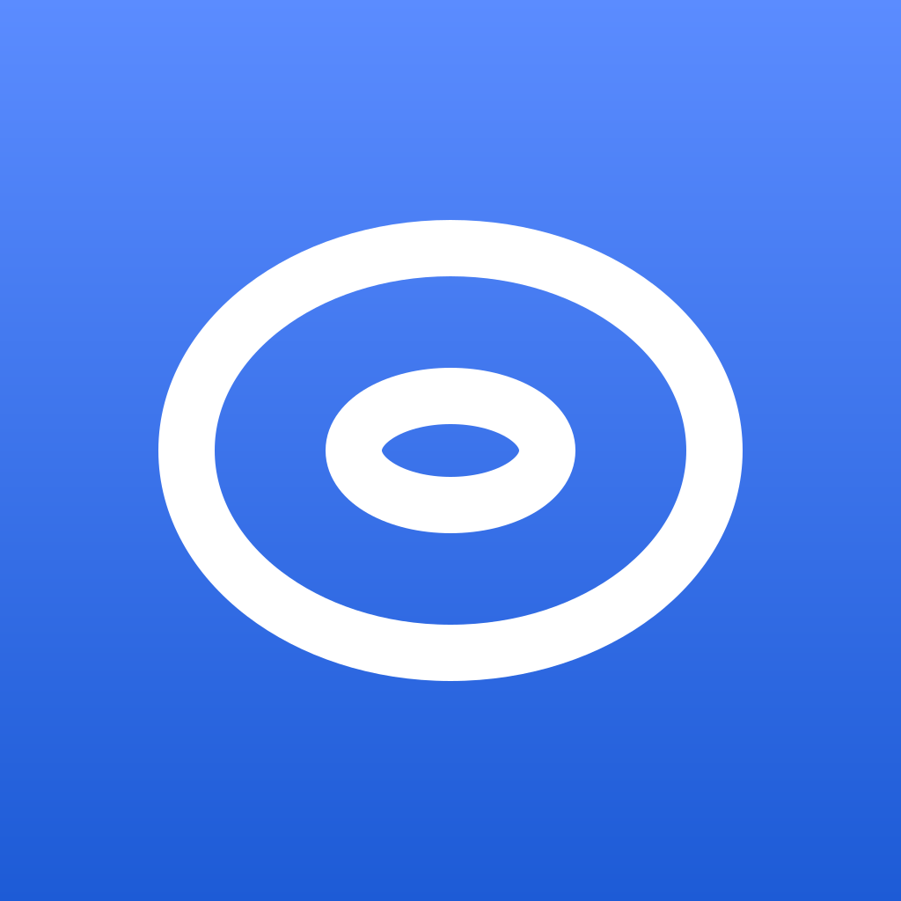

Toroid, brand kit and design system
One torus. One blue.
The mark, the colour, the type, the space and the parts the app is built from. Everything here is free to use when you write about Toroid.
The mark
A torus
The board has no edges: walk off the right and you come back on the left. Two rings say it. One bold white glyph on a blue tile, no text, no outline.

Colour
Blue, and paper
Blue is the only colour Toroid owns. It marks live cells, actions, links and the icon. The rest is paper and ink.
#1d5bd6, white on it is 5.8:1. Buttons, live cells.#5b8cff. The accent in dark mode, the top of the icon.#1646a8. Links on white, pressed states.#5b8cff to #1d5bd6, top to bottom.#ffffff light, #1c1a17 dark.#f5f5f7 light, #26231f dark. Toolbars.#e5e5ea light, #3a352e dark. Board lines, rules.#1c1d22 light, #f5f0e4 dark.Type
The system font
San Francisco on Apple, Helvetica or Arial elsewhere. No custom faces. Headlines are bold and tight; everything else is regular.
Draw a pattern.34 / 41 bold
Four rules, nothing else22 / 28 semibold
A live cell with two or three neighbours lives on.17 / 24 body
Generation 412, population 1,29615 / 20
Speed, stamp a pattern, step13 / 18 captions
Space and shape
An 8 point grid
Padding, margin and gap come only from this scale. Side margin 20. Cards and groups 20 radius, controls fully round, the icon 22.5 percent.
Components
The parts
Controls are 48 point capsules, one height in a row. Focus is a 4 point ring at 30 percent blue. The board is the app's own: blue cells on a hairline grid.
Files